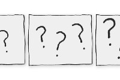
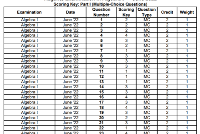

If You Try To Do Everything, You Won’t Do Anything
In 1956 Harry Belafonte placed a call to Coretta Scott King. With her husband arrested once
again, he wanted to check in with her and see how she was doing and what the movement might
need. Except they could barely carry on a conversation, because Coretta kept being pulled away
from the phone to attend to one of the children, to check on dinner, to answer the door.
Oct 19 · 6 min read · Philosophy
The Real Problem When 46-Year-Old Women Are Crying in Their Cars
And it isn’t because we’re single
Oct 21 · 8 min read · Singles
How to draw comics when you can’t actually draw.
So, you can’t draw and you’re not funny, but you want to draw comics.
Mar 23, 2018 · 5 min read ·
Drawing

Amusing Ourselves to Death in the Attention Economy
Recently at the gas station, I was filling up my tank as a beautiful woman appeared on the
high-definition screen placed on the pump. She told me when I’m feeling stressed out and
overwhelmed, I need to repeat to myself a few times the phrase everything is figureoutable and
then I’d be okay. My brain, she explained, would learn not to become stressed out.
Oct 20
·
5 min read
·
Psychology
Guessing C For Every Answer Is Now Enough To Pass The New York State Algebra Exam
My student, River, spent more time in the courtroom than the classroom last year. One Friday
night in September, a drunk friend called and asked for a ride home from a party. River obliged.
That’s a problem when you’re 14 years old. On his excellent adventure with his drunk friend,
River drove over the landscaping of several local businesses and ended with his car in the woods
caught in a web of maple sugaring lines. Things spiralled from there.
Aug 17
·
11 min read
·
Education

Behind Every Great Enterprise Lies a Crime
An Autobiographical Account Leading Up to My First Published Pictures
Oct 21
·
29 min read
·
Memoir
Recommended topics
Who to Follow
Recently Saved
Eva Keiffenheim in Age of Awareness
The Feynman Technique Will Make You
Remember What YOu Read
Oct 2, 2020 • 6 min read ★
chrissy teiger
Hi.
Oct 27 2020 - 6 min read
See all (3)